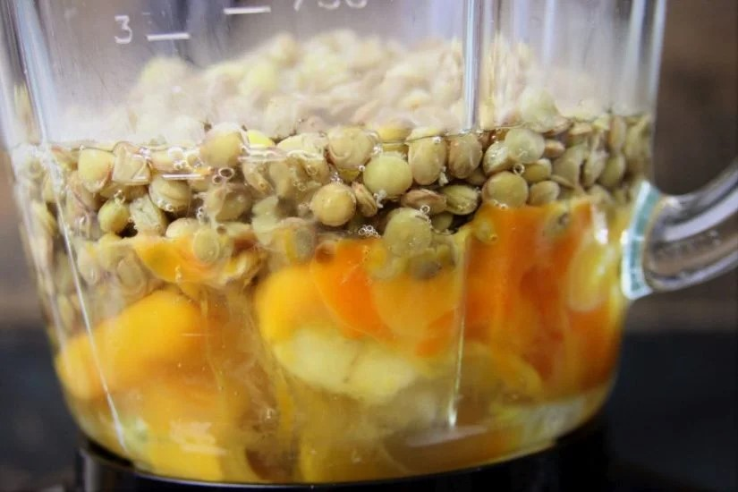
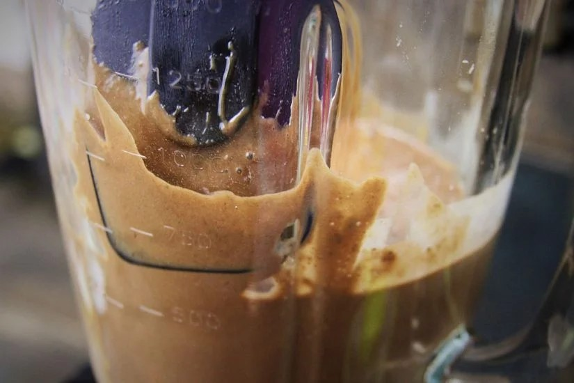
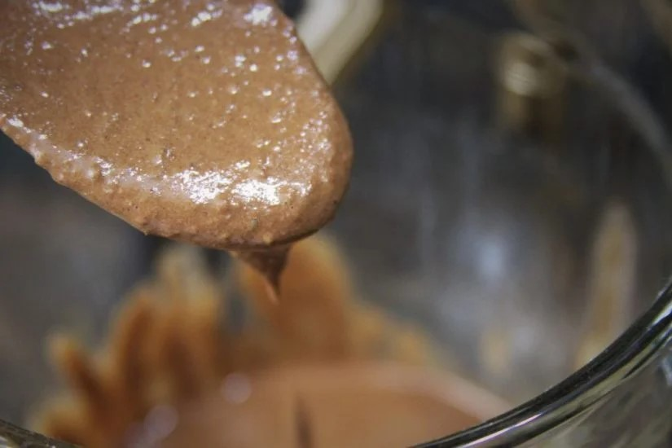
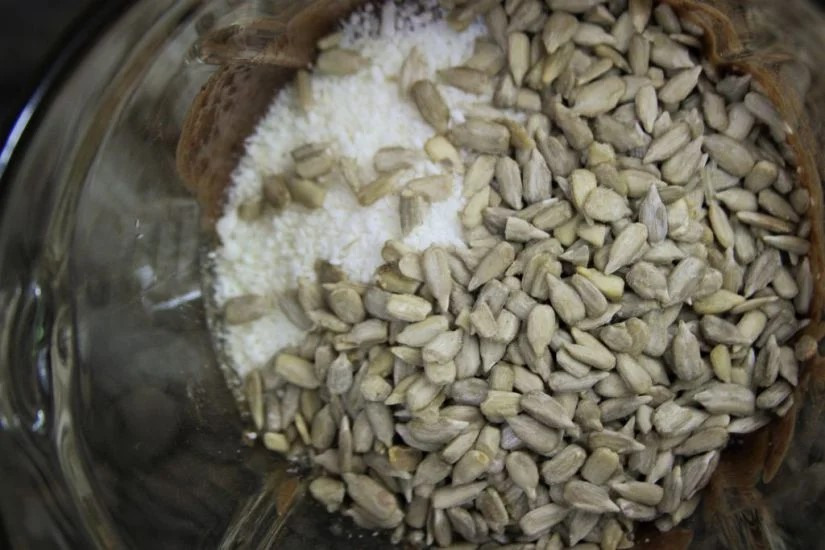
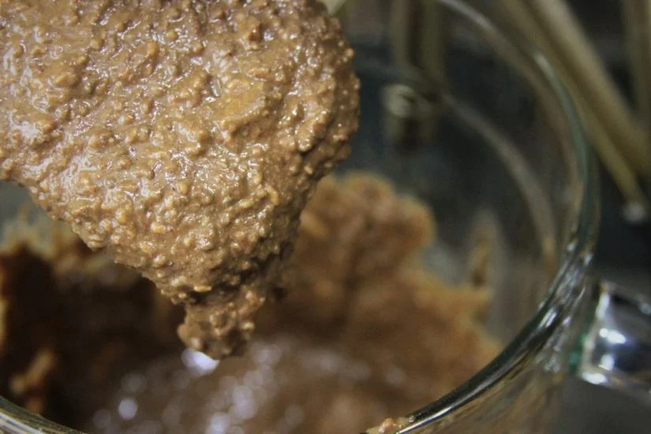
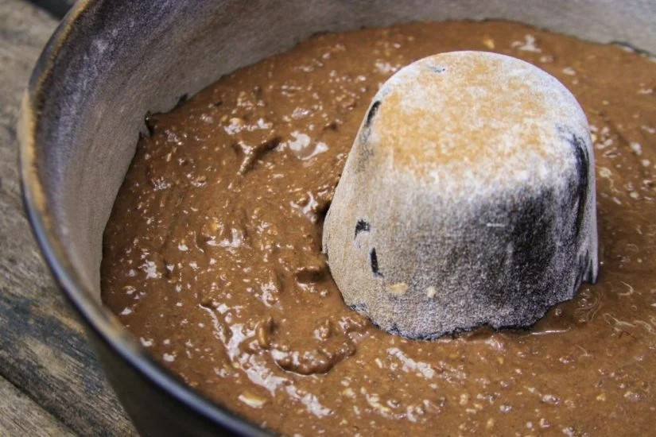
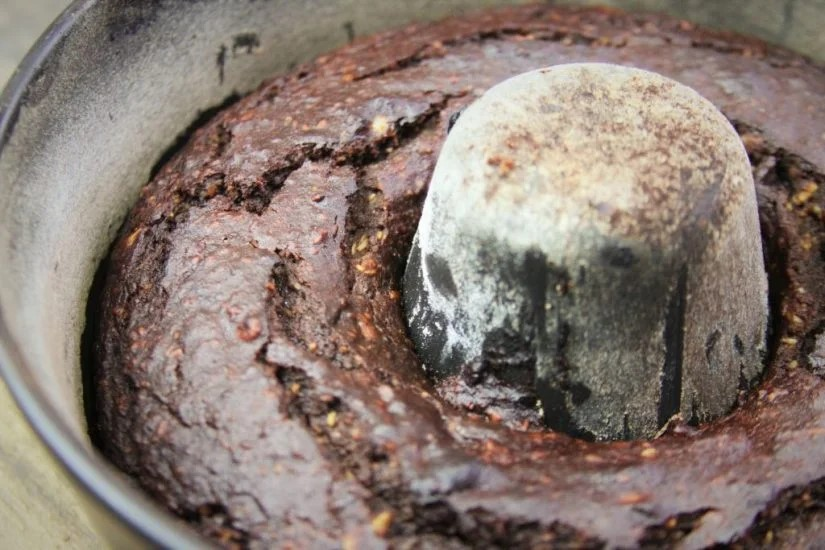
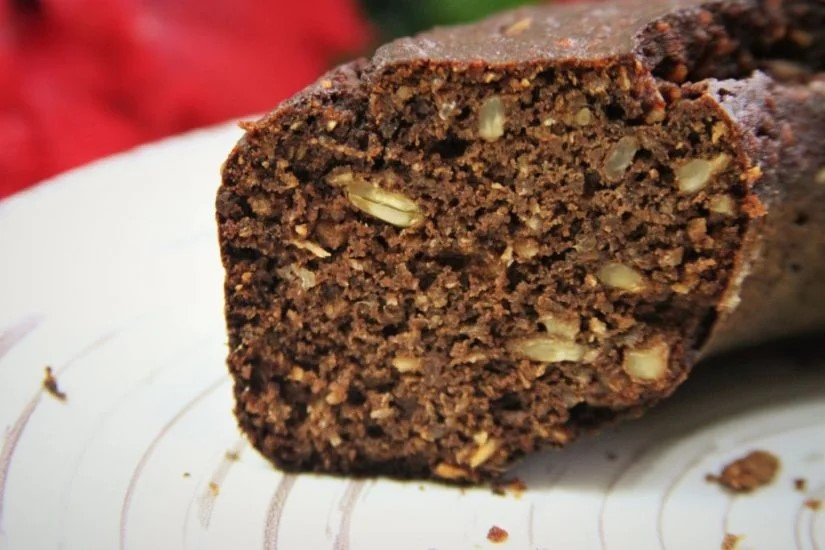

3 ovos
2 bananas prata/branca (aproximadamente 1/2 xícara)
1/3 xícara óleo de girassol
1 xícara de lentilha cozida “al dente“
1/4 xícara de mel
1/4 xícara de cacau em pó 100%
1/2 xícara de coco ralado em flocos finos não adoçado
Pitada de sal
1 colher de sobremesa de fermento em pó
INGREDIENTES OPCIONAIS
1 colher de sopa de vinagre de maçã ou o vinagre da sua preferência.
Aromatize com canela, pimenta síria, erva-doce, baunilha ou a especiaria da sua preferência
2 colheres de sopa de sementes de chia ou linhaça
1/3 xícara sementes de girassol
1/2 colher de chá de bicarbonato de sódio
Bata no liquidificador os ovos, a banana, o óleo, a lentilha, o mel, o sal e as especiarias até virar uma massa homogênea.

Depois que liquidificar bem adicione o cacau em pó. Não esqueça de limpar as laterais do liquidificador com uma espátula para garantir que tudo fique bem misturado.

Adicione as sementes de chia (se estiver usando) e o vinagre de maçã (se estiver usando) e bata bem.

Adicione o coco ralado e as sementes de girassol (se estiver usando) e mexa bem com uma espátula. Se preferir você pode despejar a massa do liquidificador em uma travessa (fica mais fácil de misturar), mas se estiver com preguiça de lavar mais uma bacia misture bem dentro do liquidificador mesmo.

Depois de misturado os ingredientes a textura da massa fica semelhante com a foto abaixo

Finalize com o bicarbonato de sódio (se estiver usando) e o fermento em pó e mexa rapidamente com a espátula.
Coloque a massa em uma forma untada e polvilhada com farinha ou cacau em pó e leve para assar em forno preaquecido à 180º C por aproximadamente 30 minutos.

Quando sua casa começar a cheirar bolo fresco (depois de 20 ou 25 minutos) faça o teste do palito. Se sair limpo retire o bolo do forno e deixe esfriar para desenformá-lo. Como essa massa é mais densa e fibrosa se você assar demais o bolo pode ficar duro.

Espere o bolo esfriar por completo antes de desenformar.

Se não se importar com a cor que a lentilha confere à massa você pode fazer esta receita sem o cacau em pó.
Quando a massa é feita com grão-de-bico ela fica um pouco mais úmida do que quando preparada com a lentilha.
Para cozinhar grãos é importante deixá-los de molho na noite anterior cobertos de água fresca com 2 colheres de sopa de vinagre. No dia seguinte dispense a água que ficou de molho e cozinhe até que os grãos fiquem macios. Ferva a lentilha por aproximadamente 5 minutos (ela cozinha bem rápido). Use a panela de pressão para cozinhar o grão de bico, ferva na pressão por 30-40 minutos.
Toda vez que usar o cacau em pó 100% tenha cuidado para medir corretamente, um pouco a mais pode estragar a sua receita e deixar amargo demais.
As passas ou as frutas secas devem ser polvilhadas com um pouco de farinha para que não afundem e fiquem apenas na parte inferior do bolo.
Para crianças que não estão acostumadas com o cacau em pó 100% você pode substituir por cacau 50% ou usar as frutas secas para deixar a receita mais docinha.
Você pode usar qualquer óleo nesta receita.
Você pode substituir o mel por melado ou agave. Se preferir também pode substituir por açúcar mascavo ou demerara, mas corrija a quantidade para 1/3 xícara.
A lentilha não pode estar muito molenga, se não ela agrega água extra para a receita e estraga a estrutura da massa. Caso isso aconteça você vai precisar adicionar umas 2 colheres de sopa de farinha de arroz para corrigir a textura.
Você pode trocar a lentilha por grão-de-bico cozido “al dente“.
O cacau 100% é intenso, por isso meça corretamente e não exagere na quantidade para não amargar a receita.
O vinagre ajuda o bolo a crescer melhor e por isso fica mais fofinho.
O bicarbonato de sódio deixa o bolo mais escuro e combinado com o vinagre de maçã ajuda a deixar o bolo mais crescido e fofinho.
SUBSTITUIÇÕES DE INGREDIENTES:
Se não gostar de sementes você pode trocar a chia e a semente de girassol por até 1/2 xícara do seu ingrediente preferido. Use:
1/2 xícara de castanhas da sua preferência;
1/4 de nozes picadas com 1/4 de gotas de chocolate meio amargo;
1/4 xícara de passas brancas (ou use ameixa, damasco, tâmaras, etc) com 1/4 xícara de castanhas;
1/2 xícara de mix de castanhas com chocolate;